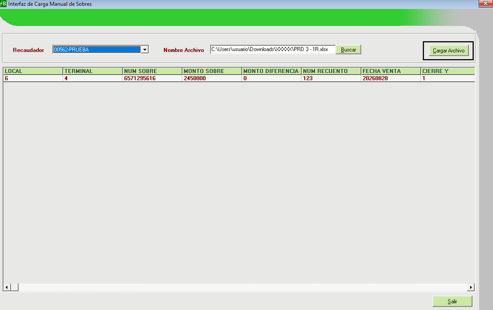

Falabella Colombia · F8 Automático · Manual de prueba
Prueba por pantallas del cierre automático
FSCC-12901 · T1 compensación automática de DI (FSCC-12957) · T2 cierre de caja automático (FSCC-12958)
| Qué se prueba | La carga del archivo de recaudación en Carga Manual de Sobres (Form133), el proceso automático (T1 → T2) y el resultado en las pantallas de F8 |
| Ambiente | Desarrollo (esquema INTRANETDE, con los objetos de FSCC-12901 instalados). Nunca en producción |
| Datos | 29 sobres reales de PRD 3.xlsx (locales 6 y 13, venta del 28-08-2026) y 23 cajas preparadas con resultados conocidos de antemano |
| Archivos | docs/sql/FSCC-12901_POC/ (scripts 01–03, 06, 98, 99) y docs/sql/FSCC-12901_POC/manual/ (M1, M2, M9 y el Excel de prueba) |
| Fecha | 08-10-2026 |
Contenido
- Qué se prueba y por qué en esta pantalla
- Cómo funciona el flujo
- Antes de empezar
- Las cajas de la prueba y su resultado esperado
- Paso a paso
- Lista de verificación final
- Problemas frecuentes
- Limpieza y cómo repetir
Leyenda: En el aplicativo = se hace en F8. En SQL = se ejecuta un script en DBeaver o SQL*Plus, conectado a desarrollo. Las figuras marcadas MAQUETA son una referencia de lo que se debe ver; la pantalla real puede diferir en el formato.
1. Qué se prueba y por qué en esta pantalla
La historia FSCC-12901 indica que el proceso automático debe correr al momento de cargar el archivo de recaudación. En la reunión del 06-10 se confirmó que la carga se hace en la pantalla Interfaz de Carga Manual de Sobres (Form133).

Captura real: pantalla principal F8 Colombia (izquierda) y Interfaz de Carga Manual de Sobres con el archivo PRD 3 cargado en la grilla (derecha). El botón Cargar Archivo inicia todo el flujo.
| Criterio de la HU | Cómo se ve en la prueba |
|---|
| CA1 · DR −800 → DI 800 y cierre | Cajas con DR −800 (escenario P1): DI de −800, la caja queda en Cerrado |
| CA2 · Límites −1.000 y 20.000 se compensan | Caja 6/4 (DR −1.000) y caja 6/9 (DR +20.000): DI y cierre |
| CA3 · −1.001 / 20.001 quedan pendientes | Cajas 13/19 (−30.000) y 13/21 (+25.000): sin DI, quedan Pendiente |
| CA4 · Conceptos pendientes impiden el cierre | Cajas 13/28 y 13/33: DR 0, pero tienen un "sobre no enviado" sin regularizar, así que quedan Pendiente con motivo |
| CA5 / CA7 · DI identificada, con fecha contable = fecha de venta | DI con usuario PROC_DI_AUTO, glosa "COMPENSACION AUTOMATICA DI" y fecha 28-08-2026 |
| CA8 / DF-SCC fila 12 · Cajas sin sobres | Cajas 6/4 Y2 y 13/5 Y2 sin sobres y sin venta: se cierran solas |
| CA9 · Si la DI deja la DR en 0, se valida y se cierra | Las 8 cajas con DI se cierran en la misma ejecución |
| FACO solo cierre Y | La Z del terminal-día no se modifica |
2. Cómo funciona el flujo
ANALISTA (F8) BASE DE DATOS (desarrollo) RESULTADO
───────────── ────────────────────────── ─────────
Carga Manual de Sobres ──INSERT──▶ VTA_FACOPRD (sobres)
(Form133) "Cargar Archivo" │ trigger TRG_VTA_FACOPRD_CIERRE_AI
▼
VTA_FACOPRD_CIERRE (cola: cajas a revisar)
│
JOB (en la prueba: script 06) ──▶ PKG_F8_FACO_CIERRE_AUTO.prc_cierre_automatico
├─ T1: ¿DR entre −1.000 y 20.000? → registra la DI
└─ T2: ¿DR = 0 y pasa las validaciones? → cierra la Y
▼
VTA_FACOTERMSTATY (cierres Y) · VTA_FACOMOVDET (DI) · log
──▶ F8 (cierre Y) muestra
Consultas de Cuadratura (Form43) ◀────────── mismas funciones del paquete Cerrado / Pendiente
Importante: en la solución aprobada el proceso lo ejecuta un job en la base, no el botón de Form133. En esta prueba ese job se simula con el script 06_ejecutar_proceso.sql, justo después de cargar el archivo.
3. Antes de empezar
| Requisito | Cómo se verifica o se resuelve |
|---|
| ☐ | Objetos de FSCC-12901 instalados en desarrollo | 01_preparar.sql, bloque 1: 8 objetos VALID |
| ☐ | El exe f8a.exe apunta a desarrollo | El Setup.ini junto al exe (sección [CONNECT]) debe ser el de desarrollo, el que entrega el equipo. Con el de test, el recaudador aparece pero el flujo no se dispara, porque en test no están el trigger ni los paquetes |
| ☐ | Versión del exe = versión de la base | En desarrollo, FACO exige la 3.4.9 (vta_parametros.vta_ultversion). Si no coincide, se abre el autoactualizador |
| ☐ | El usuario puede entrar a Colombia | En desarrollo el usuario no tenía perfil FACO: M1 lo agrega copiando su fila de otra localización, con su misma clave (no se escribe ninguna clave) |
| ☐ | Existe el recaudador 00562-PRUEBA | En desarrollo no había ninguno: lo agrega M1 |
| ☐ | Datos preparados | Scripts 01, 02, 03 y M1. No ejecutar 04: los sobres se cargan por pantalla |
| ☐ | Archivo de prueba | manual/PRD3_locales_6_13_prueba_manual.xlsx (29 filas reales de PRD 3). Debe tener al menos 2 filas: con una sola, Form133 responde "No existen Registros a Cargar" |
| ☐ | Excel instalado en el PC | Form133 lee el archivo con Excel |
4. Las cajas de la prueba y su resultado esperado
Las cajas del 28-08-2026 se arman en desarrollo con una venta declarada calculada para que, con los sobres reales del archivo, cada una caiga en un escenario conocido. La caja es: local / terminal / cierre Y.
| Caja | Sobres (Excel) | Efectivo declarado | DR después de la carga | T1 esperado | T2 esperado | Estado final |
|---|
| 6 / 4 / Y1 | 2.450.000 | 2.451.000 | −1.000 (límite) | DI −1.000 | Cierra | Cerrado |
| 6 / 9 / Y1 | 300.000 | 280.000 | +20.000 (límite) | DI +20.000 | Cierra | Cerrado |
| 6 / 17, 20, 24, 26, 27, 29, 31, 40 / Y1 | igual al declarado | igual a los sobres | 0 | Sin DI | Cierra | Cerrado |
| 6 / 44 / Y1 | 875.000 | 875.800 | −800 | DI −800 | Cierra | Cerrado |
| 6 / 4 / Y2 | — (sin sobres) | 0 | 0 | Sin DI | Cierra (caja sin movimiento) | Cerrado |
| 13 / 5 / Y1 · 13 / 41 / Y1 | 1.059.000 · 1.035.000 | +800 sobre los sobres | −800 | DI −800 | Cierra | Cerrado |
| 13 / 6, 11, 43 / Y1 | 7.389.000 · 2.029.000 · 85.000 | −3.000 bajo los sobres | +3.000 | DI +3.000 | Cierra | Cerrado |
| 13 / 45 / Y1 | 350.000 | 350.000 | 0 | Sin DI | Cierra | Cerrado |
| 13 / 5 / Y2 | — (sin sobres) | 0 | 0 | Sin DI | Cierra (caja sin movimiento) | Cerrado |
| 13 / 19 / Y1 | 3.135.000 | 3.165.000 | −30.000 | Fuera de rango | Con diferencia | Pendiente |
| 13 / 21 / Y1 | 1.670.000 | 1.645.000 | +25.000 | Fuera de rango | Con diferencia | Pendiente |
| 13 / 28 · 13 / 33 / Y1 | 2.356.000 · 5.400.000 | igual a los sobres | 0 | Sin DI | Bloqueada: sobre no enviado (SN) sin regularizar | Pendiente |
Totales esperados: 23 cajas → 19 cerradas (8 de ellas con DI automática), 2 con diferencia y 2 bloqueadas. M1 muestra esta misma tabla desde la base.
5. Paso a paso
1Preparar los datos En SQL
En DBeaver, conectado a desarrollo, ejecuta como script (Alt+X), en este orden:
01_preparar.sql: verifica los objetos y crea las tablas de control. Esperado: 8 objetos VALID y y_2026_existentes = 0.02_datos_test.sql: copia cajas reales de test, que sirven de molde. Tarda unos minutos. Esperado: verificación en OK.03_dia_prd3.sql: crea las cajas del 28-08-2026.manual/M1_preparar_prueba_manual.sql: recaudador, usuario FACO y opción 1515. Al final muestra la tabla de la sección 4.
No ejecutes 04_cargar_sobres.sql. En esta prueba los sobres se cargan por pantalla.
2Entrar al aplicativo como Colombia En el aplicativo
F8 Automático — Ingreso
UsuarioRUT del usuario
Clave••••••••
Aceptar
MAQUETA
- Abre
f8a.exe (con el Setup.ini de desarrollo) e ingresa con tu usuario y clave.
- Si tu usuario tiene varios países o perfiles, aparece la pantalla de selección de perfil (
Form87): elige Colombia (FACO).
- Debe abrirse la pantalla principal con el título "Automático - Colombia - FACO" y la bandera de Colombia.
3Ver una caja ANTES de la carga En el aplicativo
En la pantalla principal F8 (cuadratura por cierre Y), selecciona Local 6, Fecha 28-08-2026, Terminal 4 y Cierre de Y 1.
F8 — Cuadratura cierre Y · Local 6 · 28-08-2026 · Terminal 4 · Y 1
EstadoPendiente
Diferencia de Caja-2.451.000
Compensación0
Diferencia Real-2.451.000
MAQUETA · Sin sobres, la diferencia es todo el efectivo declarado.
4Abrir Carga Manual de Sobres En el aplicativo
En la barra de herramientas, abre la flecha del botón "Estado en línea" y elige "Carga Manual de Sobres". En el código es la opción CargaManual de MDIForm1, que abre Form133.
Barra de herramientas · Estado en línea ▼
Recaudación de sobres
Control de Dinero Acumulado
Detalle de Sobres Retiro
Registro de Transacciones
Informe Sobres Pendientes por Prosegur
…
Carga Manual de Sobres
MAQUETA · Si no ves la opción, tu perfil no la tiene habilitada.
5Elegir recaudador y archivo En el aplicativo
- Recaudador: elige 00562-PRUEBA.
- Buscar: selecciona
PRD3_locales_6_13_prueba_manual.xlsx.
- Aparece "Proceso de despliegue completado con éxito." y la grilla muestra los 29 registros.

Captura real de la pantalla con el recaudador elegido y la grilla con sus columnas (en la captura, un archivo de 1 fila; en la prueba son 29). Las columnas se graban en VTA_FACOPRD: LOCAL → prv_local, TERMINAL → prv_terminal, NUM SOBRE → prv_sobre, MONTO SOBRE → prv_montosobre, MONTO DIFERENCIA → prv_montodif, NUM RECUENTO → prv_numrec, FECHA VENTA → prv_fechavta, CIERRE Y → prv_cierrey.
6Cargar el archivo En el aplicativo
Presiona Cargar Archivo y confirma.
Confirma Carga Archivo
Se cargará el archivo de recaudación, desea continuar?
Sí No
F8
Se Cargaron 29 Registros
Aceptar
MAQUETA · Textos tomados del código de Form133.
Qué pasó en la base: cada sobre se grabó en VTA_FACOPRD. El trigger de FSCC-12901 lo dejó en la cola VTA_FACOPRD_CIERRE, y Form133 creó o reabrió la Z de cada terminal (comportamiento normal de la pantalla). Para comprobarlo, el bloque 1 de M2 debe dar 29 sobres y 29 en cola.
7Ver la caja DESPUÉS de la carga y ANTES del proceso En el aplicativo
Vuelve a la pantalla principal y consulta otra vez la caja 6 / 4 / Y1 (28-08-2026):
F8 — Cuadratura cierre Y · Local 6 · 28-08-2026 · Terminal 4 · Y 1
EstadoPendiente
Diferencia de Caja-1.000
Compensación0
Diferencia Real-1.000
MAQUETA · El sobre de 2.450.000 contra 2.451.000 declarado deja la DR en −1.000.
8Ejecutar el proceso automático (el job) En SQL
Ejecuta 06_ejecutar_proceso.sql. Hace lo mismo que el job agendado:
begin PKG_F8_FACO_CIERRE_AUTO.prc_cierre_automatico; end;
La salida debe decir: "Ejecucion N terminada en X segundos", seguida de un resumen por proceso (T1 y T2) y resultado.
9Ver el resultado en F8 En el aplicativo
Consulta otra vez la caja 6 / 4 / Y1. Si la pantalla ya estaba abierta, cámbiate de terminal y vuelve para que se refresque.
F8 — Cuadratura cierre Y · Local 6 · 28-08-2026 · Terminal 4 · Y 1
EstadoCerrado
Diferencia de Caja-1.000
Compensación-1.000 (DI automática)
Diferencia Real0
MAQUETA
Revisa también, para comparar:
- 13 / 19 / Y1: Pendiente con DR −30.000 (fuera de rango, sin DI).
- 13 / 28 / Y1: Pendiente con DR 0, porque tiene un "sobre no enviado" (SN) sin regularizar. Si intentas cerrarla a mano, el sistema muestra "Falta regularizar el Sobres No Enviado declarada, o elimine el registro".
- 6 / 4 / Y2: Cerrado (caja sin movimiento).
10Consultas de Cuadratura En el aplicativo
En la barra, botón "Consulta Cuadratura" (CC) → informe Terminal, local 6 o 13, rango 28-08-2026 → Consulta.
Con el exe actual (sin compilar los cambios de FSCC-12901), la pantalla solo muestra las cajas con diferencia y su botón "Cerrar Terminal" no cierra nada en Colombia:

Captura real (DF-SCC): Consultas de Cuadratura en Colombia hoy, que solo lista Dif. Real distinta de 0.
Con el exe compilado con el nuevo Form43, se ven todas las cajas, también las de Dif. Real 0, con los valores calculados por el paquete. Ejemplo para el local 13:
Consultas de Cuadratura
| Fecha | Local | Terminal | Cierre Y | Dif. de Caja | Compensación | Dif. Real | Estado |
|---|
| 28/08/2026 | 13 | 5 | 1 | -800 | -800 | 0 | Cerrado |
| 28/08/2026 | 13 | 5 | 2 | 0 | 0 | 0 | Cerrado |
| 28/08/2026 | 13 | 6 | 1 | 3.000 | 3.000 | 0 | Cerrado |
| 28/08/2026 | 13 | 19 | 1 | -30.000 | 0 | -30.000 | Pendiente |
| 28/08/2026 | 13 | 21 | 1 | 25.000 | 0 | 25.000 | Pendiente |
| 28/08/2026 | 13 | 28 | 1 | 0 | 0 | 0 | Pendiente |
| 28/08/2026 | 13 | 45 | 1 | 0 | 0 | 0 | Cerrado |
ConsultaCerrar Terminal(visible con la opción 1515, que habilita M1)
MAQUETA · Extracto. Así se ven las "cajas sin movimiento" que pide el DF-SCC (fila 12), como en F8 Chile.
Cerrar Terminal (nuevo Form43) intenta cerrar las Y abiertas con las mismas reglas. Sobre el local 13, después del proceso, debería informar "No hay Terminales que Cumplan con el Proceso de Cierre — Cierres Y no cerrados: 4": 2 con diferencia y 2 con SN pendiente. El detalle queda en VTA_FACOLOG_CIERRE_AUTO, con log_proceso = 'CC'.
11Confirmar los resultados En SQL
Ejecuta manual/M2_resultados_prueba_manual.sql:
- Bloque 2: las 23 cajas con
control = OK.
- Bloque 3: CERRADA_Y 19, CON_DIFERENCIA 2, BLOQUEADA 2 (T2), y DI_REGISTRADA 8 (T1).
- Bloque 4: 8 DI. El monto es igual a la DR con el mismo signo, la fecha contable es 28-08-2026, el usuario es
PROC_DI_AUTO y la glosa "COMPENSACION AUTOMATICA DI".
- Bloque 5: las Z creadas por
Form133 siguen sin cerrar (el proceso no toca la Z).
6. Lista de verificación final
| Verificación | Dónde |
|---|
| ☐ | Se cargaron los 29 registros y quedaron 29 en cola | Mensaje de Form133 y M2 bloque 1 |
| ☐ | Caja 6/4/Y1: DI −1.000, DR 0, Cerrado | F8 (paso 9) |
| ☐ | 19 cajas cerradas por PROC_CIERRE_AUTO | M2 bloques 2 y 3 |
| ☐ | 8 DI automáticas, cada una por el monto de la DR y con fecha contable 28-08-2026 | M2 bloque 4 |
| ☐ | 13/19 y 13/21 pendientes, sin DI (fuera de rango) | F8 y M2 |
| ☐ | 13/28 y 13/33 pendientes por SN sin regularizar | F8 y M2 bloque 6 |
| ☐ | Cajas sin movimiento (Y2) cerradas | F8 y M2 |
| ☐ | La Z no fue cerrada por el proceso | M2 bloque 5 |
| ☐ | (Con el exe nuevo) Consultas de Cuadratura muestra las cajas con DR 0 | Form43 (paso 10) |
7. Problemas frecuentes
| Mensaje o síntoma | Causa | Qué hacer |
|---|
| "No existen Registros a Cargar" | El archivo tiene una sola fila (en Colombia Form133 exige más de una) | Usar el archivo de 29 filas |
| "Carga No Realizada. Ya existen los registros" | Esos sobres ya estaban cargados (misma fecha y número), por ejemplo porque se ejecutó 04 o una carga anterior | Ejecutar M9 (y 98) y repetir desde M1 |
| El combo Recaudador está vacío | El exe apunta a desarrollo y no hay recaudadoras | Ejecutar M1 |
| El combo muestra 00562-PRUEBA, pero nada se cierra | El exe apunta a test, donde no están el trigger ni los paquetes | Usar el Setup.ini de desarrollo |
| No aparece Colombia al entrar | El usuario no tiene perfil FACO en desarrollo | Ejecutar M1 (con el RUT correcto en el bloque EDITAR) |
| Se abre el autoactualizador y el exe se cierra | La versión del exe no es la 3.4.9 que exige la base | Usar un exe 3.4.9 |
La caja queda SIN_LIBVTA o SIN_TERMSTAT en M2 | No se ejecutaron 02 y 03 | Ejecutarlos y repetir |
| Consultas de Cuadratura no muestra las cajas con DR 0 | El exe no tiene compilado el nuevo Form43 | Normal con el exe actual; compilar para verlo |
8. Limpieza y cómo repetir
| Quiero… | Ejecutar |
|---|
| Repetir la prueba (cargar de nuevo por pantalla) | M9_limpiar_prueba_manual.sql → 98_reiniciar.sql → M1 → pasos 5 a 11 |
| Dejar desarrollo como estaba | M9_limpiar_prueba_manual.sql → 99_limpiar.sql |
M9 quita lo propio de la prueba manual: los sobres cargados por pantalla y su cola, las Z que creó Form133, y el recaudador, la fila FACO del usuario y la opción 1515, si los agregó M1. 99 borra el resto (cajas, DI, log) y restaura CA_DIAS.
Manual generado el 08-10-2026 a partir del código de Form133, MDIForm1 y Form43, de los scripts de docs/sql/FSCC-12901_POC/ y de consultas de solo lectura a desarrollo y test. Índice del requerimiento: docs/README_FSCC-12901.md.